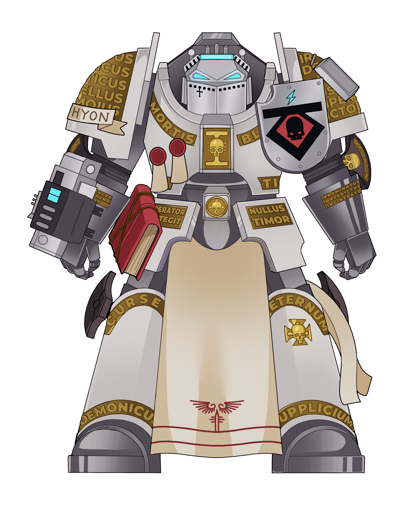

¡Soy el martillo, soy la mano derecha del Emperador,
el instrumento de su voluntad,
el guantelete alrededor de su puño,
la punta de su lanza, el filo de su espada!
País:
Argentina
Cumpleaños:
4 de Junio
Altura:
2,5 m
Comida favorita:
Pizza Hawaiana
Comida que detestas:
Zapallos verdes hervidos
Videojuego favorito:
Warhammer 40k: Darktide
Serie favorita:
The Big Bang´s Theory
Gustos musicales:
Rock Alternativo, Electrónica
Anime favorito:
Jojo´s Bizarre Adventure
Signo Zodiacal:
Géminis
Animal favorito:
Gatos
Color favorito:
Verde
Modelo:
MaoMaoAtelier / Artbytamie
Hashtag:
#TachVArt